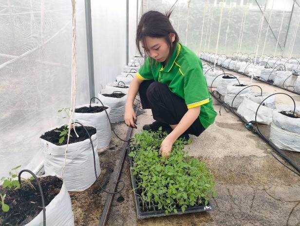
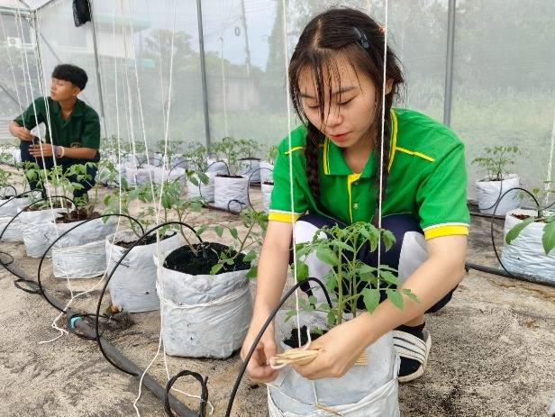
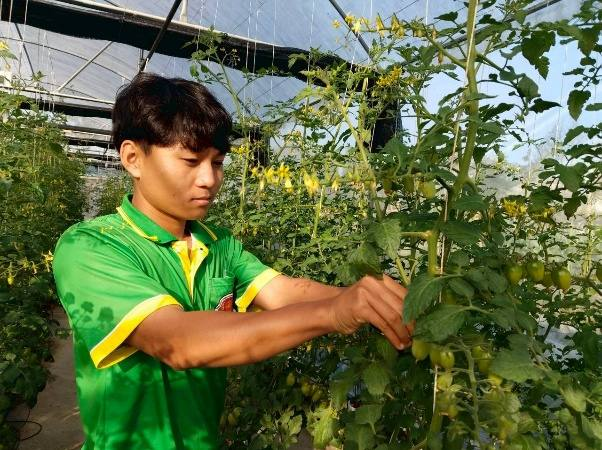
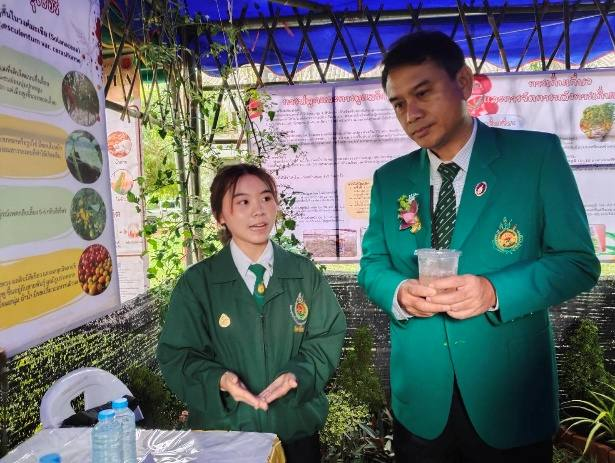

8
การเรียนรู้ 5 สาขาวิชา
นักศึกษา 5 สาขาวิชาบริหารโครงการเหมือนธุรกิจจริง แต่ละสาขารับผิดชอบช่วงหนึ่งของห่วงโซ่ และส่งต่องานให้กัน ใช้การเรียนรู้แบบโครงงานเป็นฐาน (PBL) ร่วมกับการเรียนรู้จากการทำงานจริง (WBL)
ใครทำอะไรในห่วงโซ่
พร้อมตัวชี้วัดความสำเร็จของแต่ละบทบาท
ทักษะที่นักศึกษาได้
นักศึกษาในโรงเรือนเดิมของวิทยาลัย



